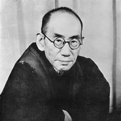

1870–1945 純粋経験から独自の哲学を築いた哲学者
哲学者。純粋経験や自己と世界の関係を論じる。抽象度が高く難解なので、平たい言い換えが特に必要。
無料で、選んだ著者の1作品と質問5問。使い切ったあとも毎日1問は聞けます。
『善の研究』を読みながら、こう聞いたとします。
「純粋経験とは何ですか」
西田幾多郎の一人称で答えたうえで、根拠として次の箇所を引用します。
経験するというのは事実其儘に知るの意である。全く自己の細工を棄てて、事実に従うて知るのである。
未だ主もなく客もない、知識とその対象とが全く合一している。これが経験の最醇なる者である。
引用はサーバで原文と照合し、一致しないものは表示しません。回答の文そのものは AI が著作をもとに再構成したもので、本人の発言ではありません。
下の4作品は、はじめの5分ぶんを原文のままこのサイトで読めます。アプリには西田幾多郎の作品が13本入っています。